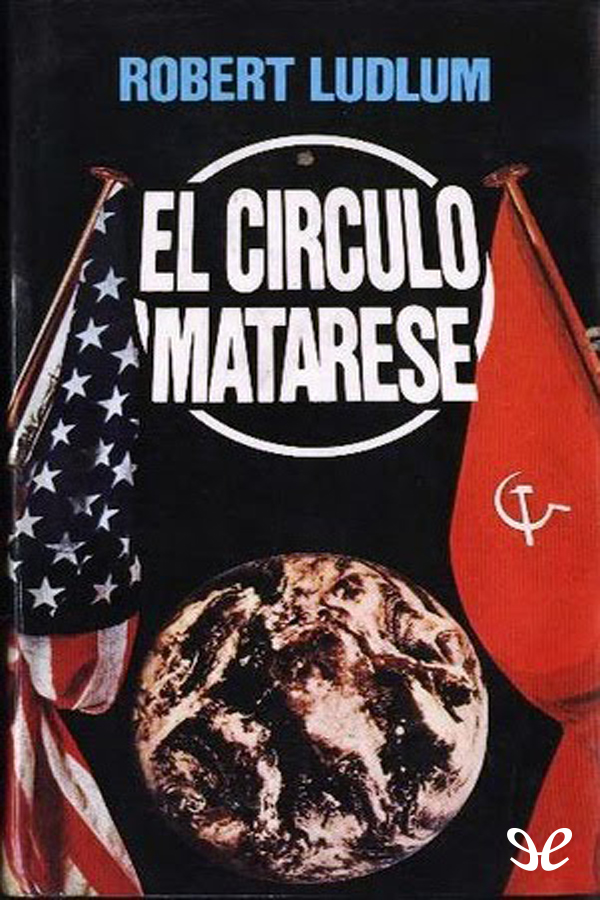

Titulo: Drácula
Descripción: El conde Drácula viaja a Londres en busca de la mujer a la que siempre amó. El profesor Van Helsing y un grupo de valientes tratará de detener al maligno vampiro, antes de que su sed de sangre devaste la metrópoli inglesa.

Titulo: El Círculo Matarese
Descripción: Vasili Talienikov, ex director de la KGB y Brandon Scofield, el asesino profesional más eficaz del mundo occidental son enemigos, con un odio antiguo y profundo. Pero ahora deben sumar sus fuerzas para enfrentarse a la organización criminal más terrible de toda la historia: el círculo Matarese.
Titulo: El Diario de Ana Frank
Descripción: Esta es la edición de los diarios personales escritos por Ana Frank entre el 12 de junio de 1942 y el 1 de agosto de 1944 en un total de tres cuadernos conservados en la actualidad,1 donde relata su historia como adolescente y los dos años en que permaneció oculta de los nazis, con su familia alemana de origen judío, en Ámsterdam durante la Segunda Guerra Mundial.
❮
❯